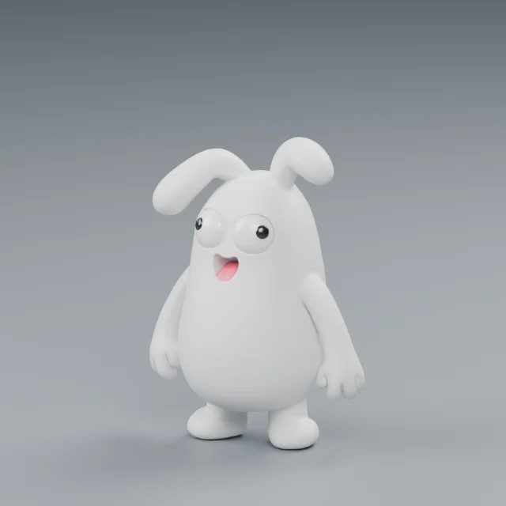
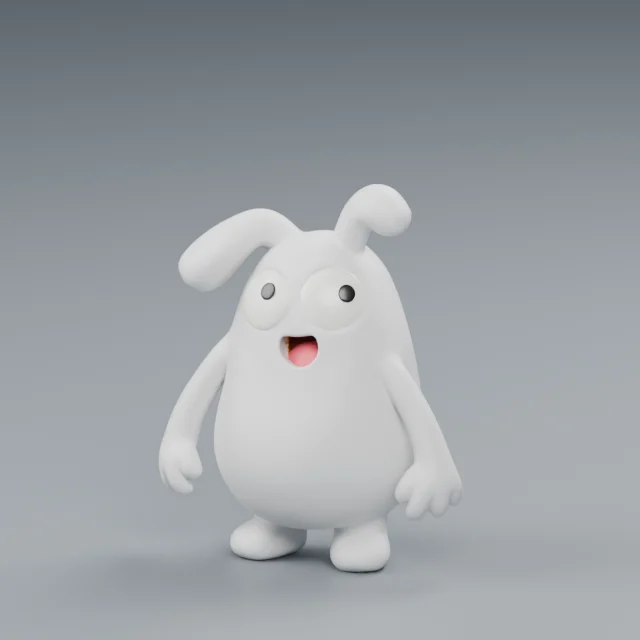
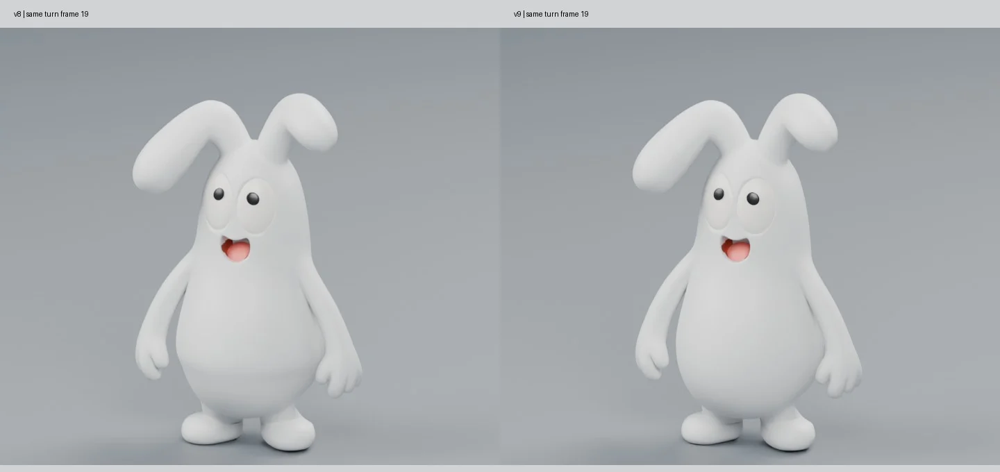
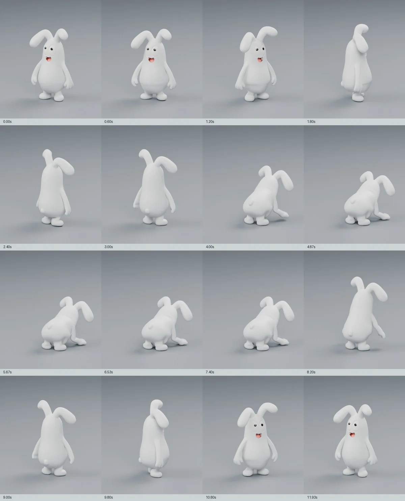
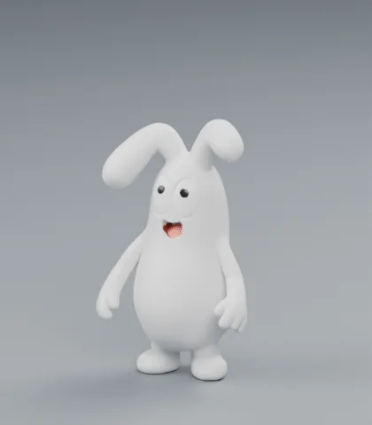

2026-11-15 · 작업 중 / 사용자 검토 전
치장 없는 기본 몸체 + 독립 스킨
네 체형과 얼굴은 유지했습니다. 가방·끈·머리띠·스카프·파우치를 분리해 선택 장비로 보존했습니다. 이 페이지는 모델 후보 보고서이며 현재 Unity 캐릭터를 교체한 결과가 아닙니다.
11/15 · 새 도발 후보 · 게임 적용 전
“이리 와” · 손바닥을 내밀어 세 번 부르기
4.8초 동작입니다. 손 모양과 팔 길이를 유지하고 팔꿈치와 작은 손목 회전으로 손짓합니다. 세 번째 도발의 첫 후보이며, 손가락별 동작·다른 체형·게임 적용과 사용자 검토는 남아 있습니다.
GIF 보기 · 16시점 자세 보기
원래 메시·UV·본 길이와 손 가중치 보존 확인. 72장 렌더와 내보낸 모델 대조, 아래16시점 시각 검토를 했습니다. 이 결과는 연속 영상 재생 검토나 Unity 검증을 의미하지 않습니다. 바닥 춤의 배·다리 접힘은 해결 전이며 새 자세 시험은 채택하지 않았습니다.


Blue · 기존 파랑 체형
몸·눈5메시 / 분리 치장1메시
열린 경계 0 · 원본 보존
· · 
Yellow · 짧고 통통한 체형
몸·눈5메시 / 분리 치장5메시
열린 경계 0 · 원본 보존
· · 
Teal · 길쭉한 체형
몸·눈5메시 / 분리 치장5메시
열린 경계 0 · 원본 보존
· · 
Coral · 둥근 체형
몸·눈5메시 / 분리 치장6메시
열린 경계 0 · 원본 보존
· · 11/15 04:15 제작 · Blender 후보
청록 · 뒤돌기 아랫배 주름 조정
뒤돌 때 낮춘 몸의 아랫배에만 국소 보정을 넣었습니다. 원형 메시와 본 길이, 손바닥 가중치는 그대로입니다. 넓은 가중치 변경은 바닥 자세의 다리 연결을 망가뜨려 채택하지 않았습니다.
12초 / 실제 Blender180프레임. 깊은 바닥 자세는 v8과 같으며 배·겨드랑이 접힘이 남아 있습니다.

동일한19번 프레임 비교. 손·팔을 늘리거나 눌러 맞추지 않았습니다. Unity·다른 체형 적용 전.
 반복 GIF 보기
반복 GIF 보기11/15 03:56 제작 · Blender 검토 후보
청록 · 뒤돌 때 무릎이 급하게 꺾이는 구간 조정
짧은 발걸음으로 돌아서도록 발을 드는 높이와 몸 낮춤을 조절했습니다. 손·전완의 길이나 손바닥 형상을 바꾸지 않았습니다. 최대 관절 변화는13.42→7.06도/프레임으로 줄었지만, 배·겨드랑이 접힘은 계속 다듬어야 합니다.
실제 Blender180프레임 /12초. 게임 녹화가 아닙니다.

Unity 적용 전. 다른 체형과 착석으로 아직 확장하지 않았습니다.
11/15 최신 검토 후보 · Unity 적용 전
청록 · 가볍게 뒤돌기와 하체 접힘 조정
뒤돌 때 깊이 주저앉던 동작을 줄이고, 바닥을 짚을 때 배·다리 연결부가 접히는 부분에 국소 보정을 넣었습니다. 손바닥·발바닥·기본 메시와 본 길이는 유지했습니다.
반복 미리보기 · 16시점 검토 · 이전과 비교
바닥 자세의 배·겨드랑이 실루엣과 무릎 전환은 더 다듬어야 합니다. 손 모양을 바꾸지 않는 국소 몸통 보정 후보이며, 착석·다른 세 체형·Unity에는 아직 적용하지 않았습니다. 완성판이나 사용자 승인 상태가 아닙니다.

이전 바닥 v5와 현재 착석 v3 비교 기록
청록 · 목·어깨 연결과 바닥 지지 자세 수정
어깨 보조 본의 영향이 머리까지 번지던 부분을 정리했습니다. 손바닥 형태와 팔·다리 길이를 유지하면서, 바닥 춤의 손 짚는 각도·몸 높이·골반 움직임을 조정했습니다. 착석에도 같은 목·어깨 수정을 적용했습니다.
개선 후보이며 완성판은 아닙니다. 배·다리 연결부의 접힘과 실루엣은 더 다듬어야 합니다. 착석은 검토용 발받침 위에서 시작하며, 바닥 접근·의자 오르기와 게임 가구 맞춤도 남아 있습니다. 다른 체형과 Unity에는 아직 반영하지 않았습니다.
이전 착석 v2 비교 기록 · 최신 목·어깨 수정은 위 후보
청록 · 손 놓기와 착석 전환
손을 책상에 놓고 앉기 → 잠시 대기 → 일어나서 손을 빼는 8초 수정 후보입니다. 책상 가장자리로 손 위치를 당겨 팔꿈치를 자연스럽게 굽히고, 원래 손바닥 형태와 팔 길이를 유지했습니다. 손이 닿은 동안에는 손과 발을 고정했습니다.
검토용 가구의 발받침 위에서 시작합니다. 바닥에서 의자로 접근·오르기, 실제 게임 가구 맞춤, 몸통·목·어깨 경계 다듬기와 다른 체형 적용은 남아 있습니다. Unity에는 아직 적용하지 않았습니다.
반복 미리보기 · 16시점 자세 검토 ·
이전 v4 비교 기록 · 최신 바닥 춤 후보는 위 v5
청록 v4 · 발을 딛고 뒤돌기 + 바닥 지지 춤
여섯 번의 작은 스텝으로 뒤돌고, 두 손을 짚은 뒤 빠르게 골반을 흔들고 돌아오는 12초 수정 후보입니다. 딛고 있는 발을 바닥에 고정하고 몸을 낮추는 전환을 늘렸습니다. 골반 보조 본 2개로 허벅지 연결부의 굽힘을 나눴으며, 원형 메시·기존 본 길이·손바닥 가중치는 유지했습니다.
검토 후보입니다. 깊이 숙일 때의 배 실루엣과 목·어깨 경계는 추가 피팅 대상입니다. 착석 전환·다른 체형·다른 춤·Unity 적용은 아직 완료하지 않았습니다.
반복 미리보기 · 16시점 자세 검토 ·
이전 v3 비교 기록 · 최신 후보는 위 v4
청록 · 바닥 지지 춤 v3 수정 후보
손을 바닥까지 구겨 넣는 대신 몸을 숙이는 각도·손 위치·팔꿈치 방향을 다시 맞췄습니다. 지지 구간 손목은 최대51.5도로 줄였고, 손바닥 핵심 형태와 본 길이를 유지합니다. 뒤돌기 → 두 손 짚기 → 빠른 골반 흔들기 → 일어나기8초 후보입니다.
아직 완성판이 아닙니다. 돌아설 때 발이 미끄러지는 부분과 골반·허벅지 연결 주름이 남아 다음으로 수정합니다. 게임에는 적용하지 않았고 다른 체형/착석도 아직입니다.
반복 미리보기 · 16시점 자세 검토 ·
이전 손·팔 FK 비교 후보
청록 바닥 춤은 기존 자세가 약84도 손목 회전을 요구했습니다. 손목만50도로 제한한 후보도 몸을80도 숙이고 손바닥 정렬이 어긋나 채택하지 않았습니다. 해당 후보는 미채택으로 보존했고 위v3에서 몸 자세·팔꿈치 방향·손 접지 위치를 함께 다시 맞췄습니다.
아래는 손목을 중립으로 둔 작은 FK 동작 비교 후보입니다. 요청한 웃긴 춤3종이나 전체 모션의 완성판이 아닙니다. 손바닥 핵심 형태·본 길이·루프는 검사했지만 전체 피부 변형과 게임 체감은 남았습니다.

· · MP4 ·
이어서 할 일
캐릭터: 바닥 지지 춤·별도 도발·착석 전환과 걷기/뛰기/점프/들기 → 체형별 렌더 검수 → 호환 리그/독립 스킨으로 Unity 연결.
방: 제작 담당의 최신 시안을 확인해 외곽·크기·높이·소품 위치를 맞추고, 가구/장치 용도에 맞는 충돌을 연결합니다.
사용자가 중단을 요청할 때까지 작업합니다. 현재 열린 Unity의 Play 검증은 허용됐으며, 새 캐릭터의 게임 적용과 최종 동작 검토는 별도입니다. 이번 후보는 Blender 작업으로 만들었습니다.